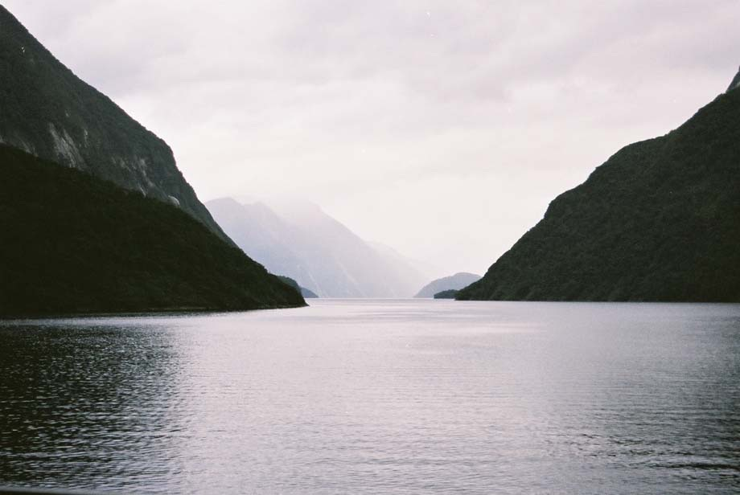
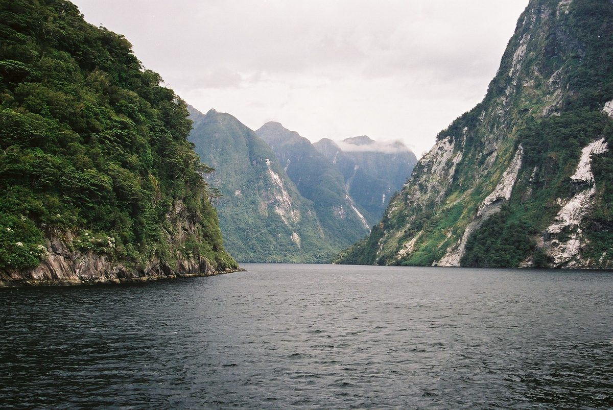
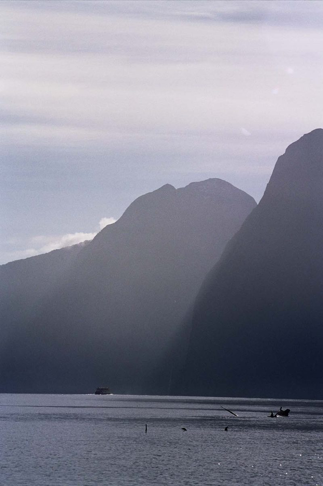
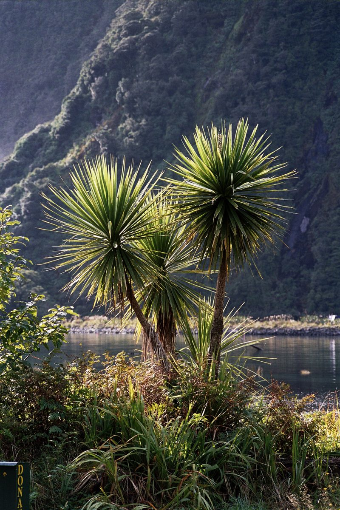
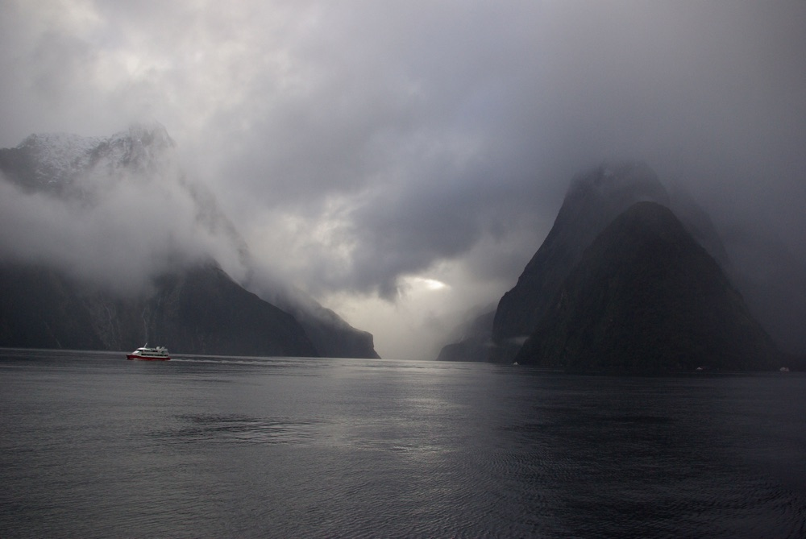
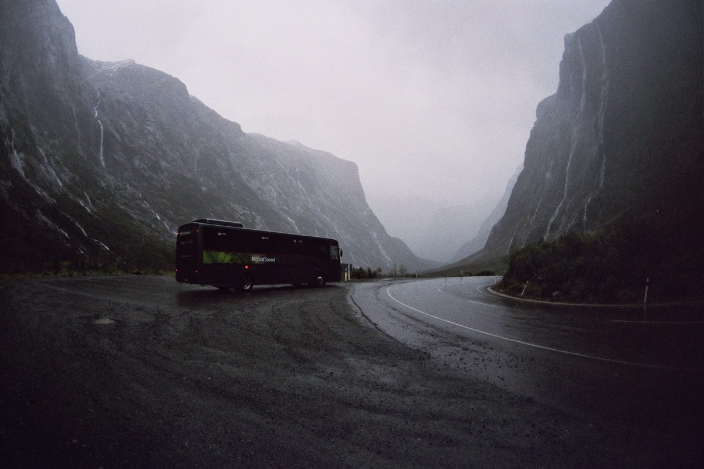
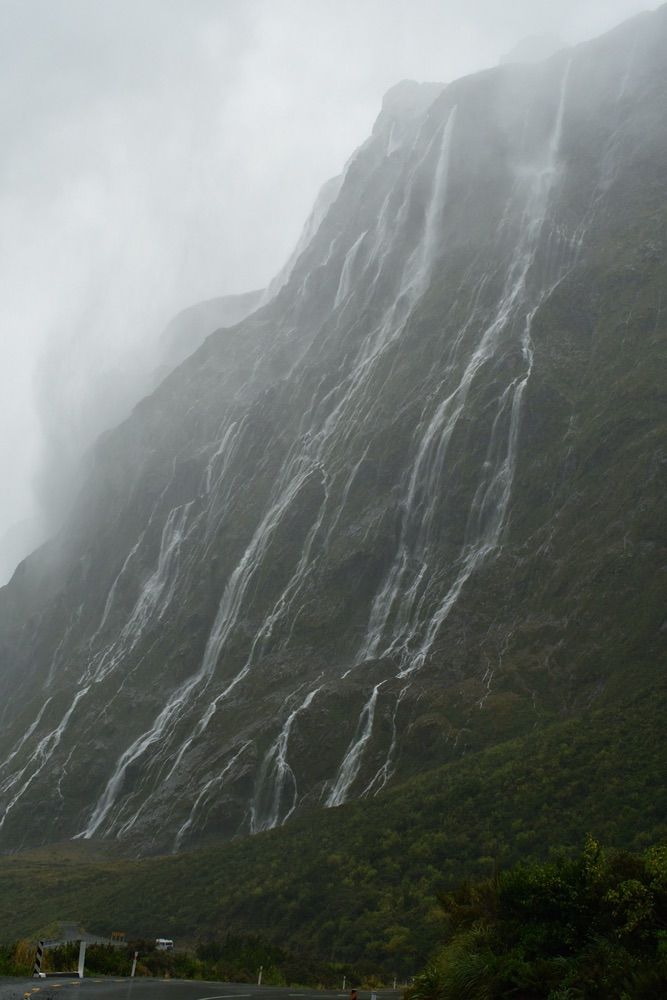

Abel Tasman National Park
Things to do

Abel Tasman National Park
The National Park is easily accessible from either Marahau or Takaka ends. There is multi-day or one-day hike available in the park. Often the one-day, one-way hike from Torrent or Bark Bay is a great way to spend the day regardless of time of year.
The one-day hike starts with a water taxi ride to your start point then follows the coast back to where you’ve left or pick up your transport home. Relatively easy walk with no serious climbs or difficult terrain to traverse.


Auckland
Things to do
North Shore City
Jumping on the ferry to Devonport allows you to see the Auckland Harbour from a boat without paying big money to go on a chartered yacht.
A nice by-product of jumping on a ferry is the less crowded shopping in Devonport the quaint southern suburb of the North Shore.

Auckland City Beaches
The city beaches are all “safe" beaches to swim as there is no strong dangerous currents in the water. During fine summer weekends the beaches and surrounding grounds become very busy with local sun-worshipers. if you are looking for somewhere to catch up on your travel diary or relax before or after your adventures a afternoon at the beach wouldn’t go a miss.

One Tree Hill
One (None) Tree Hill work the trip more because of its history as well as the views.
Originally named Maungakiekie (trans; Mountain of the kiekie, or Totara that stands alone)
The site was once home to the largest Māori Pa (fortified village) ever built pre-European times, home to 5000 inhabitants. Just prior to the European arrival the Māori had largely left the area due to tribal battles in the north. Although time has played its part today it is still easy to see the earthworks that were created as a by-product of the Pa.
Once the early European settlers settled the area one of Auckland's founding fathers John Logan Campbell owned the hill. Originally planning to farm the hill he changed his mind when he saw the rapid development of the area for housing and infrastructure, so created the reserve Cornwall Park.
During this period there was a Pohutukawa tree growing near the summit of the hill, due to vandalism or the need for firewood the tree was cut down. The original tree which gave the hill its name was replaced by a Californian Radiata Pine in the 1870’s.
The tree has been under attack in differing forms by Māori activists trying to make their political point known over the years. The only successful attack came in October 2000 by activist Mike Smith who used a chainsaw to try to remove the pine, however a chainsaw at 2am is easily heard and he was prevented from finishing his cut. The damage he had done was enough that the tree died and had to be removed by the local council.
The hill is also honoured in song, most famously by the Irish group U2 in their song One Tree Hill, written in honour of their Kiwi roadie Greg Carroll who was killed in a motorcycle accident while they were writing the Joshua Tree album. The song was only released in New Zealand and promptly went to number 1 on the music charts.

MOTAT (Museum of Transport and Technology)
The museum located a short bus trip from down town pays homage to all things mechanical that have a connection with New Zealand.
Spread over 2 locations joined by a restored Auckland tram line the grounds bracket the Auckland Zoo. As well as all the usual things you would expect to find (trucks, tractors, busses, steam engines, planes...)
MOTAT houses some very unique pieces; a replica of the first powered aircraft, built from the plans of the inventor Richard Pearce and arguably the first person to achieve a controlled powered flight,
Displays about aviation pioneers Jean Batten and the Walsh brothers, a Lancaster bomber and a replica of Sir Keith Parks (the defender of London in WW2) Hurricane fighter.


Sky Jump
If you don’t like the idea of freewill, this is a fun activity to do in Auckland and a quick way to the bottom of the tower.
The Sky Jump has been described to me as a “let down” (its a controlled descent fall, from the top, like a bungie jump but no actual free fall).
Sky Tower
Sky Tower is New Zealand’s tallest building and offers great views of the city from the top of the tower are a great way to see the city.

Kelly Tarltons
Kelly Tarltons Aquarium. Situated a short bus trip east of the downtown is the by-product of New Zealand's own diver/ adventurer Kelly Tarlton.
Kelly Tarltons dream was to bring the Southern Oceans life as viewed by divers to the everyday public with out getting their feet wet.
Converting a disused sewer treatment plant to a giant aquarium Kelly made his dream come true in 1985. Kelly died only a couple of months after its opening but he did get a glimpse of how successful it was to really become, as the same day he died the 10,000 visitors passed through its doors.
Here is a fantastic opportunity to see the ocean alive with out having to pass a dive certificate or don a wetsuit.
Bay of Islands (Paihia)
Things to do
Ferry to Russell
A short ferry trip across the Bay of Islands is New Zealand's first capital - Russell. The small town once the ‘hell hole of the Pacific’ is now a wee settlement surrounded by stunning beaches and scenery. All the while steeped in history.
You can drive around the bay to Russell if you’d prefer. This does give you the option of transport, making visiting the flag pole that Hone Heke cut down in 1846 or the protected beaches close by to the town. The drive is narrow and winding.

Bay of Islands beaches
Both Paihia and Waitangi sit on the shore line of a stunning white sand beach and are easily walking accessible from the town.


Visit the islands
The Bay of Islands has as its name suggests many islands. Paihia is the main town of the region and is home to many operators willing to take you out into the bay.
There is everything from spending a day on a yacht with “She's a Lady” to the 1.5hr jet boat ride of the Mac Attack.
Call into the i-site and find a trip that suits you.

Waitangi grounds
The Treaty of Waitangi is the founding document between the indigenous Māori and the English Crown. Signed on 6 February 1840 this document has an interesting journey, both in why is was written and signed and also its legacy.
A visit to the Waitangi Grounds is well worth is both in its historical value to New Zealand and also the views from the grounds itself.
if you are there at the right time you can also see a Māori culture show.

Cape Reinga
Things to do
Cape Reinga
Right at the northern end of State Highway 1 is the Cape Reinga Lighthouse.
While the landmark is an iconic and beautiful photo opportunity, making the trip is as much about the journey. To access the lighthouse you will probably drive up State Highway 1.
But on the drive back you might wish to pop out to 99 Mile beach and drive along New Zealand's only beach that is also a recognised road (Be aware most rental car companies will state you are not insured if you do).
Tapoutpotu Beach is just short of the cape and is an awesome place to camp or stop for a picnic lunch.
Please note, that while there is a few Dairies along the way, there is really nowhere to buy food/drink from 40km south of the cape.

Christchurch
Things to do
Māori Culture Show
Māori culture show at Rotorua, a great introduction to the traditional Māori culture. taking you through a welcome and traditional challenge as well as providing great evenings entertainment. Some of the tours provide a hangi (traditional style earth cook meal).


Dunedin
Things to do
Elm Wildlife Tours
Elm Wildlife tour at Taiaroa Heads near Dunedin. For around the $180 the tour shows you the Royal Southern Albatross (the largest flying bird in the world), the yellow-eyed penguin (one of the rarest penguins in the world), the Hooker sea lion (native to the southern coast) and the Kekeno the New Zealand fur seal (found all round the south island but still fun to watch). The tour shows you rare and endangered wildlife unique to the this region in their own environment, no zoo’s or reserves. The tour lasts 4 hours plus and is held every afternoon. The guides are knowledgeable and patient.

Kaitaia
Things to do
Gum Diggers Park
Kauri museum, highlighting the local Kauri industry that in the regions early years provided a strong economy.

Matakohe
Things to do
Matakohe Kauri Museum
The Kauri tree during the pioneering days was a valuable resource for the Coromandel and Northland regions.
Providing an economy as well as a building material. The tree not only was valuable for is straight lumber but also for its gum. The museum at Matakohe is well worth the stop to learn about the part the tree played in the regions culture and history.
the museum and its cafe are a comfortable drive north of Auckland that it also makes a welcome comfort stop point.


Nelson
Things to do
Abel Tasman National Park
The National Park is easily accessible from either Marahau or Takaka ends. There is multi-day or one-day hike available in the park. Often the one-day, one-way hike from Torrent or Bark Bay is a great way to spend the day regardless of time of year.
The one-day hike starts with a water taxi ride to your start point then follows the coast back to where you’ve left or pick up your transport home. Relatively easy walk with no serious climbs or difficult terrain to traverse.
Opononi
Things to do
Opononi Information Centre
As well as providing information on the region, it also delivers the story of Opo. Opo was dolphin that visited the region and became friendly with people. For a while Opo was the big attraction for the region.
Queenstown
Things to do
Fiordland National Park
Visit the Fiordland National Park. However you see the park, hike a track, bus trip to Milford Sound or Doubtful Sound. A visit to the national park is a must.









Rotorua
Things to do
Velocity Park
If adrenaline is your thing then this park is where you’ll find your fix. From the Swoop a giant swing, freefall into a safety net, racing in a capsule on a monorail, virtual skydive or strapping into a jetsprint boat, this place will get your heart racing.
Agrodome
Showcasing our agricultural New Zealand. The show has sheep on performance, sheep being shorn, dogs working all with good nature and banter.
A world class show that has won many tourism awards.
Wingspan
This native raptor sanctuary is a jewel in the regions crown of activities.
Not only does Wingspan aid the recovery of sick and injured raptors for release they also have displays of falconry.
You will get to see New Zealand's fasted bird of prey the karearea (falcon) hunt a decoy, you also get to see these birds up close as they are introduced to you.

Whakarewarewa Geothermal Park and Cultural Experience
Whakarewarewa Geothermal park in the southern district of Rotorua is a geothermal park like the others in respect of its geothermal activity on show.
But the park also houses a carving school where young carvers come to learn traditional carving. Visitors can walk around and see the students at work or what they are working on.
At 12:30 daily there is a cultural show in front of the Wharenui.
Wai-o-tapu Geothermal Park
South of Rotorua is a Wai-o-tapu Geothermal Park.
It has on display all of the geothermal wonders, hot bubbling mud, sulphur laden pools of bright yellow shores, weird coloured pools and geysers.
It is home to the Lady Knox Geyser, the geyser is triggered daily at 10:15.
Redwood forest and Treetop walk
The Redwood Forest is a tree growing experiment when the future of New Zealand commercial forestry was being explored. While Radiata Pine was discovered to flourish and grow quickly in New Zealand and become the predominant species for commercial forests. this stand of Redwoods remains.
It is free to walk through the Redwood forest and enjoy the trees and is an enjoyable short walk.
At night however the treetop walk comes alive. The tress and David Trubridge art that hangs in the tress and from the walkway are illuminated. Providing a stunning spectacle.

Tamaki Tours
This Māori culture show is an experience not just a show. While you can drive, I suggest you take the bus pick up option. They will pick you up and take you to their village.
At the village you will be welcomed via a whero (challenge).
Once the challenge has been accepted you will look through what a Māori village would have looked like pre-European arrival. then to the pōwhiri (welcome) where you will be treated to song and dance, with lots of lighthearted humour.
Now you have been welcomed you move to the wharekai where a prepared buffet hangi (food cooked in an earth oven) has been prepared.
While this is a polished tourism operation it is a slice of traditional culture and well worth the money.
Wai ariki
Deluxe thermal spa. Wai Ariki is locally Māori owned and operated day spa. Offering a range of exquisite spa treatments.
While not the place for people wanting low budget options. If you are prepared to splash out and treat yourself, soaking for a few hours in the pools and enjoying a massage with native essential oils is a magical way to spend an afternoon.

Māori Culture Show
Māori culture show at Rotorua, a great introduction to the traditional Māori culture. taking you through a welcome and traditional challenge as well as providing great evenings entertainment. Some of the tours provide a hangi (traditional style earth cook meal).
Taupō
Things to do
Tongario Crossing
The Tongariro Crossing is a one day alpine crossing that transverses Mt Tongariro. It is billed as one of the best most accessible alpine crossings in the world.
Like all alpine activities it is very weather dependant as per its safety. You can drive yourself to the start.. but remember you will need to get from the end back to the start (its a one way trek).
I recommend for safety, comfort and ease sake to use a transport operator out of Taupō or Tūrangi. They will take you to the start and pick you up at the end. Also inform your safety concerns that may be relevant for that day.
This is an alpine trek, you will need to take, warm clothes as well as clothes for if you get hot. Quick drying attire and windproof over clothes are highly recommended. Take sunscreen and food (light and easy eating foods) with lots of water.
Rock n Ropes
Rock n Ropes near Taupō, the cheapest thrill/adrenaline-pumping/action activity in the country. A high ropes adventure corse designed to test your nerve and ability to deal with heights. For around $80 for a half day course and with a fear factor far above bungie jumping this is bang for buck. The course is one of the safest activities of its type available yet the perceived danger is higher than it’s equivalentents.

Tūrangi
Things to do
Tongario Crossing
The Tongariro Crossing is a one day alpine crossing that transverses Mt Tongariro. It is billed as one of the best most accessible alpine crossings in the world.
Like all alpine activities it is very weather dependant as per its safety. You can drive yourself to the start.. but remember you will need to get from the end back to the start (its a one way trek).
I recommend for safety, comfort and ease sake to use a transport operator out of Taupō or Tūrangi. They will take you to the start and pick you up at the end. Also inform your safety concerns that may be relevant for that day.
This is an alpine trek, you will need to take, warm clothes as well as clothes for if you get hot. Quick drying attire and windproof over clothes are highly recommended. Take sunscreen and food (light and easy eating foods) with lots of water.
Waipoua Forest
Things to do
Tāne Mahuta
Nestled in the Waipoua Forest a short walk from the road is Tāne Mahuta.
The approximately 2000 year old Kauri tree having a volume of 516 cubic metres (18,000 cubic feet) is the largest tree by volume in the Southern Hemisphere.
His name translates to God of the Forest, referencing back to his role in separating Papatunuku (Earth mother) and Rangi Nui (Sky Father).
Due to the deadly disease "Kauri dieback" that as its name suggests is a fungal infection that often kills the Kauri tree, touching the tree is not allowed incase you have accidently transported the fungus in your travels.

Waitangi
Things to do
Māori Culture Show
Māori culture show at Rotorua, a great introduction to the traditional Māori culture. taking you through a welcome and traditional challenge as well as providing great evenings entertainment. Some of the tours provide a hangi (traditional style earth cook meal).
Wellington
Things to do
Te Papa
Te Papa National Museum, offers a fantastic overview of New Zealand’s history and culture. Has fantastic displays with as little or as much reading as you wish without loosing an understanding of the displays. It also houses some of the countries most treasured artefacts.
Te Papa is the kind of place you can easily loose yourself for a day in. They have touring exhibitions as well as permanent displays. Many of the wildlife, or events that are mentioned in this app are displayed at the museum.
The Haast Eagle, the Moa, volcanic activity, earthquakes, settlement of NZ, Māori culture and NZ technologies are all on display.
International tourists over the age of 16 have an entry fee around $35-40.